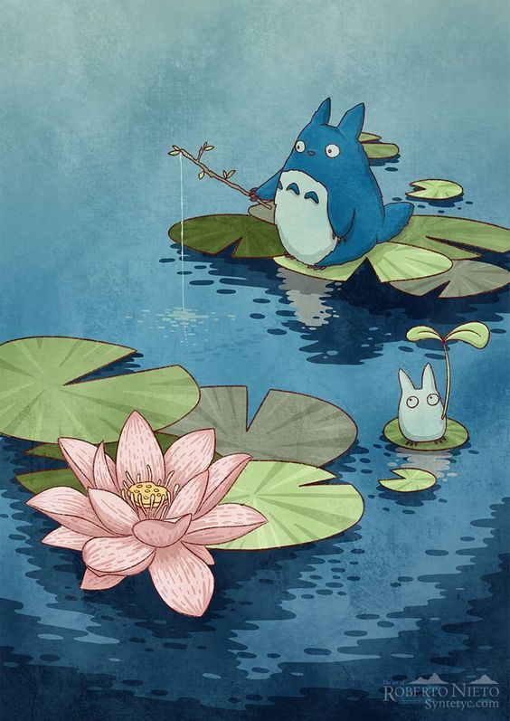

Studio Ghibli eller Ghibli (japanska: 株式会社スタジオジブリ Kabushiki-gaisha Sutajio Jiburi) är en japansk animations- och filmstudio grundad 1985 av Hayao Miyazaki, Isao Takahata och förlaget Tokuma (via Animage-redaktören Toshio Suzuki[a]). Toshio Suzuki har arbetat på studion som producent, medan Miyazaki och Takahata genom åren varit studions två främsta filmregissörer. Studions logotyp innehåller en profilbild av en liten och en stor totoro.
Studio Ghibli har producerat 20 långfilmer för bio, ett antal kortfilmer och reklamfilmer samt en TV-film. Åtta av studions filmer tillhör de 15 mest framgångsrika japanska biofilmerna; Spirited Away toppar listan med över motsvarade 274 miljoner US-dollar i globala biointäkter.
Sedan Miyazaki och Suzuki båda gått i pension (och medgrundaren Suzuki trappat ner sin verksamhet) lades den löpande filmproduktionen ner sommaren 2014.
